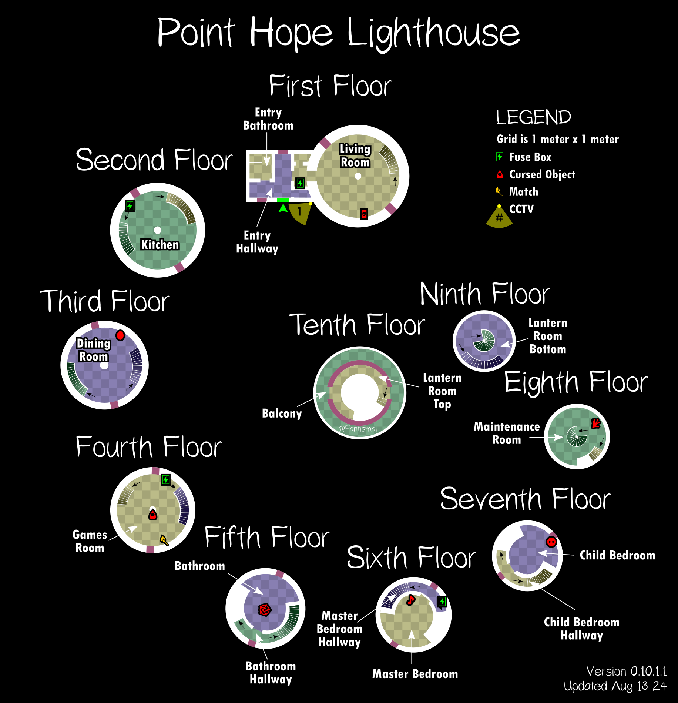

Point Hope состоит из расширенного цокольного этажа, на котором расположены ещё девять комнат примерно одинакового размера, каждая из которых считается отдельным этажом. В маяке есть две ванные комнаты, одна поменьше на втором этаже и очень большая, которая доминирует на пятом этаже, а также две спальни, главная спальня на шестом этаже и детская спальня прямо над ними на седьмом этаже. На верхнем этаже есть балкон с видом на окрестности. У карты Point Hope очень линейная структура: всегда существует только один маршрут, позволяющий добраться до другой области карты. Из-за того, что карта небольшая, а для перемещения между этажами используются длинные винтовые лестницы, при перемещении по локации в темноте очень быстро теряется рассудок, тем более что освещение каждого этажа обычно расположено на верхней стороне лестницы, ведущей к нему. На круглый балкон на верхнем этаже ведут две двери, но через дверь, из которой открывается вид на море внизу, гораздо короче путь к лестничной клетке, которая ведёт обратно на девятый этаж в Фонарную комнату.
Point Hope
Point Hope ― это маленькая карта в Phasmophobia. Это 12-этажный маяк с десятью комнатами. У него есть спиральные лестницы и круглые комнаты, что делает планировку уникальной.
Структура

Укрытия и стратегии
На Маяке есть 11 мест для укрытия:
- Ванная на первом этаже, в душе
- Вход, шкаф-купе рядом с выходной дверью
- Гостиная, маленькая палатка-маяк
- Гостиная, шкаф-купе у входа в гостиную
- Гостиная, за открытым ящиком под лестницей
- Второй этаж, за картонкой рядом со стиральной машиной
- Третий этаж, за коробками под лестницей
- Главная спальня, за перегородкой в комнате
- Спальня для мальчиков, шкаф
- Восьмой этаж этаж, шкафчик
- Девятый этаж, за коробками возле лестницы
- Любитель: нет
- Средняя: 3
- Профессионал: 4
- Кошмар/Безумие: 6
- Игра для 3-х игроков: +1 доступное укрытие
- Игра для 4-х игроков: +2 доступных укрытия
Расположение источника электропитания
Есть четыре места, где может появиться источник электропитания:
- В гостиной
- В кухне
- В игровой комнате
- В коридоре главной спальни
Советы
В игровой комнате на камине можно найти одну спичку в коробке.